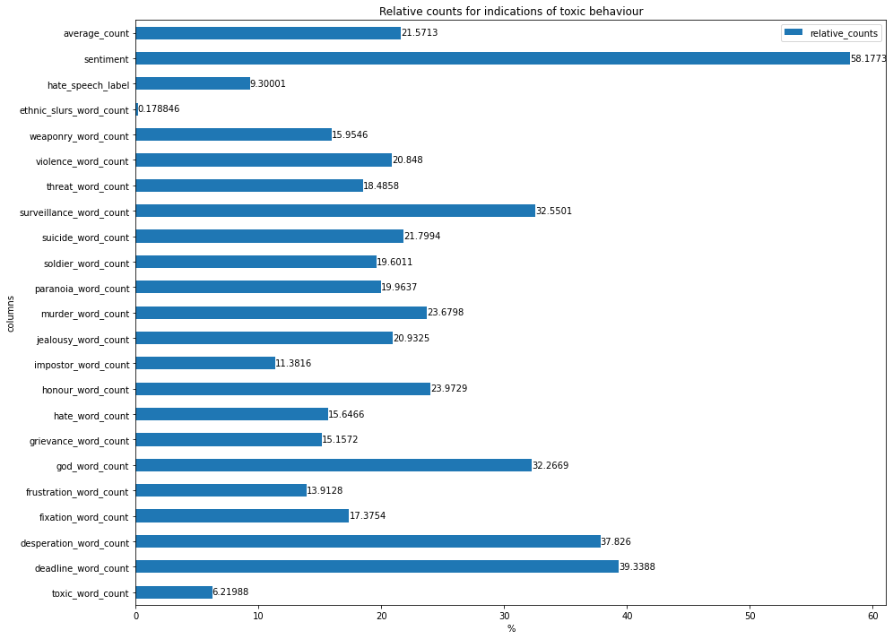

Analysing
Toxicity in Formula 1 Fandom - Computational Analysis of Communications
Final
Author: Leon Knorr
Matr-Nr: 1902854
Disclaimer
In order to use Citations in Jupyter Notebook, the whole Notebook has
to be converted to markdown and after that, the markdown file has to be
compiled with LATEX and the bibliography and bibliography style is
injected. Because of that Citations and the bibliography are only
visible in the PDF version of the notebook. However because comments
contain emojis, and other special characters, the output of each code
cell has to be cleared before the notebook is converted otherwise the
pdf compile will fail. In addition to that the formating of the code
cells in the pdf document is not necessarily perfect. As a result,
Citations and bibliography will only be correctly visible in the PDF
version, where as code and its output is only visible in the notebook
source.
Introduction
Formula 1 is the highest class of international racing for open-wheel
single-seater formula racing cars and is generally considered the most
competitive, fastest and hardest class of motor racing. Since it’s first
season in 1950, Formula 1 is visiting a diverse list of many different
countries, where the best drivers in the world are racing against each
other in teams of two drivers to determine the best driver and the best
team on the Formula 1 grid (Lowrey, 2019). These events are visited by
thousands of Fans, with millions more following them on television and
social media. With the 2021 season being one of the closest and most
entertaining seasons in the history of Formula 1, where Red Bulls Max
Verstappen beat Mercedes driver Lewis Hamilton in the grand finale of
the season under controversial circumstances after a full season of
controversy, drama and intense on track battles and with the release of
Netflix Drive To Survive, Formula 1s popularity is growing rapidly. But,
reports of Toxic and abusive Fan behavior at events and in comment
sections on social media are accumulating, and casts an ugly shadow over
Formula 1s latest successes (Woodhouse, 2022). As the
reports over toxic and abusive fan behaviours in social media and at
live events are rising, Formula 1 as well as Fans and drivers are taking
a stand against toxicity in the Formula 1 community. However, an
independent and scientific analysis of this topic is missing and
therefore the accusations are sort of hanging in the air without a solid
scientific foundation. Therefore, in order to tackle this problem
research into the toxicity of Formula 1 fandom is a necassety to gain
valuable insights into understanding the problem, where it originates
from and to build a foundation for future measures to make attending
Formula 1 events as well as the media around it a safer and more
enjoyable experience. To take the first step into this direction, this
thesis will analyse Youtube comments of the Formula 1 channel in order
to determine:
If the Formula 1 fandom is toxic
Has Toxicity risen over the years?
Is the toxicity a “self-made” problem of Formula 1 and where is the
toxicity originating from?
Fundamentals
In this chapter the necessary fundamental knowledge is presented.
Formula 1
Formula 1 is the worlds most prestigous motor racing competition, as
well as the world’s most popular annual sporting series (Lowrey, 2019). It marks
the highest class of international open-wheel single-seater formula
racing. The first Formula 1 competition was held in 1950, since then the
competiton for the world drivers championship (wdc) which determines the
worlds best driver and the world constructors championship (wcc) which
determines the best team, is held annualy and is sanctioned by the
Fédération Internationale de l’Automobile (FIA). During the competition
(also called a season), Formula 1 visits a variety of different
countries and racing tracks, each event (Grands Prix) is attended by
thousands of people with millions watching from home (“Formula
One,” 2023). All rights of the Formula 1
brand and the competition itself is owned by Formula One World
Championship Limited, which is a corporation, that provides media
distribution and promotion services, besides that, it controls the
contracts, distribtution, and commercial management of rights and
licenses of formula 1 (Formula
OneWorldChampionshipLtd - CompanyProfile and
News - BloombergMarkets,
n.d.). The term Formula 1 is used to describe the corporation, as
well as the competition, as they can’t exist without each other.
What is Fandom
According to Cornel Sandvoss Fandom is a community of people that are
regularly, consuming a given popular narrative or text with great
emotional involvement (“What IsToxicFandom?” n.d.). The
members of the community are called fans, which is a short form of
“fanatic” (Arouh,
2020). In other words, a fandom is a community of people that are
fanatic about a popular narrative or text such as a tv series, movie
franchise or sports.
Becoming a fan starts with the adoption of a fan identity about a fan
object, thus fandom can be a powerful of defining the self. The fan
object can be anything that people can be fanatic about, this may be a
simple object such as trains or a virtual asset such as a movie
franchise. Therefore, by taking part in a fandom, people are expressing
themselfs through an identity they’ve chosen for themselfs. As a result,
fans may lead to see the fan object as an extension of themselfs and
thus react personally threatened if the fan object is facing a threat
such as accusations etc (“What IsToxicFandom?” n.d.). In
addition to creating a strong part of their own identity, fans feel more
connected or socialised through their fandom, as studies indicate, that
even if fans don’t interact with other members of a fan community, they
still perceive themselfs as part of that community. Because of that,
fans not only become personally invested in their fandom, they become
socially invested as well (“What IsToxicFandom?” n.d.).
As a result of the strong connection fans build up to their fan
object, the time-frame in which this self identity has been chosen is
also playing a role. As an example, many people build a fandom in their
childhood about a tv series, franchise or sport, this often leads to
them feeling entitled to having their fan object preserved as they deem
acceptable. This behaviour is also called fan entitlement. A good
example for this behaviour are the news movies and series in the Lord of
the Rings and Star Wars franchises, as most fan communities of these
franchises have been outraged about the new characters and story lines,
where many people claimed that this “ruined their childhood” (“What IsToxicFandom?” n.d.).
From an economic point of view, fandom and fan cultures are seen as
the ideal costumers. They are eager to get their hands on the newest
products and they are stable with re-occuring purchases, since intense
consumption is considered a part of the fan identity (Arouh, 2020).
Defining Toxic Fan behaviour
In the first place, toxic fandom is a buzzword, that is widely used
throughout media to describe or identify fans who engage in behaviors
that are considered negative or unaccaptable. This behavior can range
from simple negative responses to bullying other members of a fandom or
those involved in the creation of the fan object (“What IsToxicFandom?” n.d.). Most of
this behaviour can be observed online in social media, there are however
reports of toxic behaviour in real-life as well, such as abusive
behaviour at events.
The word toxic itself however is defined as “of relating to, or
caused by a toxin,” “of the nature of a poison; poisonous” (Arouh, 2020).
This definition originally originates from medival latin, where it
refers to poisoned arrows or to being imbued with poison. Following this
definition, it is an external substance that is toxic and not a
person or their behaviour. However in recent years the understanding of
this definition has shifted, today someones actions or the emotions
experienced or types of character are now understood as poisonous or
“toxic” (Arouh,
2020). This definition is closely related to the definition of
the word fan, as explained earlier, fan originates from fanatic, which
is traditionally linked to madness and demonic posession. This
traditional and long obselete link is often exploited by media outlets
to mark fans as psychopaths whose frustrated fantasies of intimate
relationships or unsatisfied desires with the fan object take violent
and ant-social forms (Arouh, 2020). In order to maintain
this hypothesis, media often picks the most miserable and negative or
“click-bait” examples of fan behaviour, as it creates the most attention
and keeps the viewing figures high (Arouh, 2020), (Proctor & Kies,
2018). These circumstances are additionally amplified by social
media plattforms, as they promote toxic behaviour, because it usually
creates a lot of interactions. Therefore, it is our overall
understanding of what a fan is that marks a him as a toxic “other”.
What is also observed, is that “toxic” fans often fall back to racist
and mysogenistic behaviour compared with hate speech in order to defend
their fan object or view point. This often comes with a feeling of
“power loss” for the “toxic fan”. Because of that, current social-,
ideological- and political conflicts are becoming more and more frequent
as a topic in toxic behaviour (Proctor & Kies, 2018),
(Arouh,
2020), (“What IsToxicFandom?” n.d.). For some
members of the fan communities, this feeling of power loss is amplified
by current political circumstances where they feel a feeling of
disempowerment at their loss of priviliged status in society because of
gender discussions or woman rights movements. Thus toxic fans are often
painted as angry white, heterosexual men or members of the “alt-right”
community. However in many cases, fan communities are used as a
plattform to spread this hatered or ideological ideas because it creates
a lot of attention in social networks as well as from the media. The
media then progresses to paint fandom and online culture as more and
more toxic because it creates “maximum cultural penetration” (Proctor & Kies,
2018). This trend has led to the phenomenon of progressive
toxicity, where other fans “rush to prove one’s moral superiority
by speaking out against some racist, sexist or otherwise hurtful
sentiment, the sentiment is often amplified on a scale that wouldn’t
have been possible had people not taken the bait” (Proctor & Kies, 2018).
This rush to prove morally better than the toxic other often leads to
toxic behavior by the defender itself. Because of that, toxic practices
more and more frequently are instantiations of larger political or
cultural polarizations and they depict the current socio-political
climate. Thus toxic fan behaviour is often observed as a conlflict
between the “political correct” pro-diversity crowd, which are also
called social justice warriors (SJWs) and the members of the so-called
“alt-right” hell-bent (Proctor & Kies, 2018).
However toxic fan behaviour is not limited to racist, misogynistic
comments that can also include hate-speech. Some toxic fan are even
going as far as to writing death or rape threats, doxing people (doxing
refers to leaking personal information online) or to show abusive and
harassing behaviour in public against other groups (Proctor & Kies,
2018), (Arouh, 2020).
The Dataset
The dataset that will be used throughout this thesis consists of
40200 Comments with replys from 500 youtube videos that were uploaded
since 2020 of the formula 1 youtube channel. To obtain this data, the
Youtube API V3 was used.
First up, the API has to be initialised, for this an api key is
needed, that has to be stored in a .env file in the same directory as
the jupyter notebook. This api key is then read in the following code
cell and the youtube api is initialized through googles official
googleapiclient library.
Now request to the Youtube API V3 can be made. Before we can scrape
comments, the video id of the video that comments want to be obtain from
is needed. Therefore, data about all videos since 2020 until now are
requested. However the api will only retrieve 50 items per request, if
there are more items that fit the search query the response is paged and
contains a nextPageToken, that can be used to obtain the next
50 items. Requesting all videos since 2020 allows the dataset to span a
timeframe of three years and will allow to analyze toxicity over time as
well and will also paint a broader picture of how the F1 fandom
developed. After obtaining all video information, the video ids are
extracted and safed into a list, which is used later to obtain the
actual comment threads.
Formula1_official_channel = youtube_api.channels().list(part='snippet' ,forUsername='Formula1').execute()['items'][0]videos_after_2020 = youtube_api.search().list(channelId=Formula1_official_channel["id"], maxResults=max_results, publishedAfter="2020-01-01T00:00:00Z", part='id').execute()video_ids_after_2020 = [item['id']['videoId'] for item in videos_after_2020['items']]whilelen(video_ids_after_2020) < max_results and"nextPageToken"in videos_after_2020.keys(): videos_after_2020 = youtube_api.search().list(channelId=Formula1_official_channel["id"], maxResults=max_results, publishedAfter="2020-01-01T00:00:00Z", part='id', pageToken=videos_after_2020["nextPageToken"]).execute() video_ids_after_2020 = video_ids_after_2020 + [item['id']['videoId'] for item in videos_after_2020['items']]
Besides the list of video ids, the data is also parsed into a
dataframe. This allows to take general video information such as like
count, video title, the overall comment count etc. into consideration
for the final analysis.
Now that all the necessary video information has been obtained, the
actual comments and replys can be requested. In order to achieve this,
for every video id that has been retrieved earlier, a list of 15 comment
threads is requested. Every comment thread consists of a topcomment,
that has a number of replys associated with it. Because of the maximum
quota of 10000 request units per day, for each video only 15 comments
can be obtained, as each comment request costs one unit, for all 500
videos for 15 commenthreads per video, a quota usage of 7500 applies.
Now for each retrieved top comment a maximum of 10 replies are
requested. The corresponding data, is then parsed into one large
dataframe, that contains the comment text as well as administrative
information like the video id as well as the comment id and further
useful information like the number of likes a comment / reply has or the
publishing date. This additional information allows to further reason
about the amount of interaction the particular comment got.
Last but not least the dataset is saved into a “pickle” file, which
allows efficient storage of dataframes. This is especially useful if the
notebook has to be restarted because the dataset doesn’t has to be build
from scratch and no quota or api access is required to perform analysis
on the dataset.
Because of the quoate limit google has set for the youtube api, the
dataset is only depicting a small section of the actual circumstances in
the Formula 1 fandom. For example, for one video, a maximum of 15 * 10 = 150 comments will be retrieved.
However, on average a video has 1250 comments. Thus a lot of fan
interaction will be missed and is not included in this dataset. In
addition to that, the dataset only uses the Youtube API as a source,
however Formula 1 fandom spans over multiple platforms, especially
Twitter, Instagram and Reddit. Thus it is possible that depending on the
plattform toxic user interactions may be more frequent as they are
governed differently. Also, as Formula 1 is an international sport,
comments may not be in english, the dataset therefore must be considered
multilingual, which can be problematic depending on the methods used.
Nevertheless the dataset spans over a total of 40200 comments that can
be analysed.
Dictionary Analysis
As the first method to analyze the dataset, a dictionary analysis is
performed. For this, the following three different online available
dictionaries are used:
Othrus Lexicon for Toxicity (Orthrus-Lexicon,
2022), to classify toxic texts directly
the Grievance Dictionary (Vegt et al., 2021), to
classify different categories of negative or unacceptable behaviour
a dictionary of ethnic slurs based of wikipedia (“List of Ethnic
Slurs,” 2023), to find toxic behaviour based on
racism
In order to achieve a fast and reusable way of analysing comments
with any of the given dictionaries, each dictionary and comment text
will be represented as a set. Between those two sets, the set
intersection is computed, which contains all words that are found in the
dictionary and in the comment text. Thus it essentially checks for word
occurence. The number of words from the dictionary is then added to the
result dataframe. In addition to that, a global counter tracks the
number of overall occurences of each dictionary word. This allows for
the analysis of language biases or trends in Formula 1 fandom. This
method is used for all given dictionaries.
The Othrus-Lexicon for Toxicity is a dictionary containing words
often used throughout the internet in toxic content (Orthrus-Lexicon,
2022). It contains about 1900 words that include slurs, insults
and common internet abbreviations and obfuscations, such as “sh*t”,
which are used to bypass automatic content moderation systems. Other
then the Github page, nothing else can be found on the internet about
this dictionary, therefore nothing is known about creation process or if
and how the dictinoary has been validated. Nonetheless it will be used
during this thesis to provide additional insights into the toxicity of
Formula 1 fandom as it fits the topic perfectly but its results have to
be treated with caution.
In order to use the Othrus-Lexicon for Toxicity, the dictionary has
to be read from the provided “toxic_words.txt” text file and is then
converted into a set. The set conversion will remove duplicates and
ensures compatibility with the previously introduced method of set
intersection for word occurence, which is used to analyse the
dataset.
withopen("dictionaries/toxic_words.txt") as toxic_words_file: set_of_toxic_words: set=set([word.strip() for word in toxic_words_file.readlines()])set_of_toxic_words
The Grievance Dictionary proposed by van der Vegt et. al. aims to
provide a method to automatically understand language use in the context
of grievance-fuelled violence threat assessement (Vegt et al., 2021). It
has been created out of informed suggestions from experienced threat
assesement practitioners in combination with subsequent humand and
computational word list generation. The resulting dictionary includes
20502 words which were annotated by 2318 participants. In its validation
process, it was applied to texts written by violent and non-violent
individuals. The results showed strong evidence for a high
classification performance (Vegt et al., 2021).
The dictionary itself is composed of multiple categories which depict
different forms of grievance, for example jealousy or threat. Each
category includes a number of word stems, annotated with weights, which
indicate how important or meaningful the given word is for the category
it is included in. There are two version of the dictionary available,
one which includes words with weights of five or higher and one which
includes words with weights of seven or higher. During this thesis the
dictionary with weights higher than five will be used, as it can
hypothetically cover more infrequent and domain specific words. The
dictionary can support three different approaches to text classification
(Vegt et
al., 2021):
Proportional Scoring: Proportional scoring or
wordcount-based classification, calculates the proportion of grievance
fueled words in the given texts. This proportion is then used as a
classification measure.
Weight-based: During this approach, the assigned
word weights are used to obtain a weight average for each given text,
which is used as the classification measure.
Word inclusion: Word inclusion checks if and how
often the given words from the dictionary are included in the text.
In order to be able to analyse the dataset with the grievance
dictionary, all comment texts have to be stemmed. For that, the
Porterstemmer, word_tokenize and TreebankWordDetokenizer from the
natural language toolkit will be used. First, the comment dataset will
be copied, this ensures, that the original texts won’t be affected by
the applied dictionary specific processing. Then, the text column will
be manipulated through the swifter module, which ensures efficient and
automatic parrallelization. During manipulation, the text is split up
into tokens, then converted to its word stem by the Porterstemmer and
detokenized by the TreebankWordDetokenizer. This process essentially
converts the original text into the same text sequence but it is
composed of word stems instead of the actual words.
from nltk.stem import PorterStemmerfrom nltk import word_tokenizefrom nltk import TreebankWordDetokenizerimport swifterstemmer: PorterStemmer = PorterStemmer()detokenizer: TreebankWordDetokenizer = TreebankWordDetokenizer()stemmed_comments: pd.DataFrame = comment_df.copy()stemmed_comments["text"] = stemmed_comments.text.swifter.apply(lambda text: detokenizer.detokenize([stemmer.stem(word) for word in word_tokenize(text)]))stemmed_comments
After preprocessing the dataset, the grievance dictionary can be
loaded. As it is stored in a .csv file, the pandas read_csv function can
be used to read the dictionary into memory. However, the csv includes a
seperate unnamed index, which needs to be dropped.
As the dictionary made up of several categories, a set for each
dictionary category has to be created in order to ensure compatibility
with the dictionary over set intersection function, that was presented
earlier. Now for each category, the texts are analyzed using this
method. However instead of saving one counter, that counts word
occurences, a dictionary which stores each counter for its given
category.
The third dictionary to be used has been created out of a scrape of
the wikipedia page for ethnic slurs (“List of Ethnic Slurs,”
2023). The page list all known ethnix slurs in alphabetical
order, including their targets, meaning and origin. In order to scrape
the website, the webbased tool wikitable2csv has been used.
This tool allows the conversion of tables on wiki websites into .csv
files. As Wikipedia lists every slur in alphabetical order with one
table per letter, a total of 26 .csv files are created. Thus, in order
to use the dictionary, all .csv files are in the directory are listed
and loaded into their own dataframe, which are then concatinated to form
one big dictionary of ethnic slurs.
from os import listdirimport os.pathdict_files: list=list(filter(lambda f: f[-4:] ==".csv" ,listdir("dictionaries/ethnic_slurs/")))dict_df: pd.DataFrame = pd.DataFrame()forfilein dict_files: part = pd.read_csv(os.path.join("dictionaries/ethnic_slurs", file)) dict_df = pd.concat([part, dict_df])dict_df.reset_index(inplace=True, drop=True)dict_df
Now, to be able to reuse the dictionary over set intersection method,
the list of terms / slurs in the dictionary are converted into set and
then passed onto the method alongside the comment dataset.
After the dataset has been analysed with all three dictionaries, the
resulting dataframe, that includes the dictionary word overlap counts
per comment, is saved to disk. This allows for efficient reloading
without the need of reexecution for the analysis of the acquired
data.
As the second method for analysing the dataset, two transformer based
text classifiers are used. One which classifies the sentiment of a given
comment by marking it positive or negative and one which classifies the
comment as hate speech or not.
A Transformer is an attention based machine learning architecture,
that is made of multiple layers of encoders and decoders. A given text
is first transformed into a basic numerical representation, which is
enriched with positional information. This representation also called
encoding, is then passed on to the stack of n encoders, which compute an
information rich embedding. This embedding represents the texts meaning,
words and other metadata in multi-dimensional space. It is then injected
into the decoder stack, which generates a new text sequence, based of
already generated characters and the embedding from the encoders (Vaswani et al.,
2017). Today, many variations of the original transformer
architecture exist, some are only using the encoder stack, while others
only use the decoder stack. The most well known variations are BERT
(Bi-directional Encoder Representations for Transformers) and Open-AIs
GPT (Generative Pre-Trained Transformer).
In order to use the dataset with transformer models, some
pre-processing has to be applied. It consists of removing html or other
structured script language content, links and anonymizing user mentions.
In addition to cleaning the input texts, some comments have to be
removed from the overall dataset, as they are either in a different
language or consist of unreadable gibberish, which leads to issues while
running some transformer models.
from transformers import AutoModelForSequenceClassification, AutoTokenizer, AutoConfigimport numpy as npfrom scipy.special import softmaximport swifterfrom bs4 import BeautifulSoupdef preprocess(text): new_text = [] text = BeautifulSoup(text, "lxml").textfor t in text.split(" "): t ='@user'if t.startswith('@') andlen(t) >1else t t ='http'if t.startswith('http') else t new_text.append(t)return" ".join(new_text)# Delete unreadable comments that result in the models crashingcomment_df.drop([14603], inplace=True) # comment is full of random characterscomment_df.drop([27224, 27223], inplace=True) # comment is not in englishcomment_df.reset_index(drop=True)comment_df_for_transformers = comment_df.copy()comment_df_for_transformers["text"] = comment_df_for_transformers.text.swifter.apply(lambda text: preprocess(text))comment_df_for_transformers
Sentiment
The first transformer model is used to classify the sentiment of a
given comment into positive or negative. Even though this is not a
direct classification of typical toxic behaviour like racism or hate
speech as sorrow text will also be classified as negative, it still
hints towards the overall sentiment inside Formula 1 fandom.
The text-classification transformer used in this thesis is the
“distilbert-base-uncased-finetuned-sst-2-english” (HF Canonical Model Maintainers,
2022) model. It is a fine-tuned version of the
“DistilBERT-base-uncased” on the SST-2 (Stanford Sentiment Treebank
corpus) (Socher et al.,
2013) for sentiment classification. The model has been validated
on SST-2 as, well as on the GLUE (General Language Understanding
Evaluation Benchmark)(Wang et al., 2019). On both Datasets,
the model reaches scores over 0.9 (1 being the highest possible score)
across the board, with scores around 0.98 in all metrics for sentiment
classification (HF Canonical Model Maintainers,
2022). However it can only work with english text. Besides the
proven classification performance, the model can produce biased
predictions. As an example, in this map (taken from: (HF Canonical Model
Maintainers, 2022)): the prediction scores for producing a positive
sentiment per country name are depicted. It can be observed,
that the probabilisty vary drastically between different countries. It
has been shown, that for the sentence “This film was filmed in COUNTRY”,
“France” will produce a positive label with a probability of 0.89 but
“Afghanistan” will only produce a positive label with a probability of
0.08, even though nothig in the text hinted at a semantic shift (HF Canonical Model
Maintainers, 2022). As these kind of models are trained
unsupervised, this is an unintentional side-effect. Nonetheless, the
model is a powerful, reliable and well tested sentiment classifier and
will thus be used during this thesis.
An alternative to the distilbert-base-uncased-finetuned-sst-2-english
are models like the “cardiffnlp/twitter-roberta-base-sentiment-latest”
(Barbieri
et al., 2020) model, that has been trained to classifiy tweets
this included working with emojis, irony, offensive language and
hatespeech, which would in theory be a better fit for the domain of this
research. However, the model has been shown to produce scores around
0.65 or lower, which is comparatively low for sentiment classification
tasks. Besides that, no bias analysis has been done on the model or the
train dataset (Barbieri et al., 2020),
which poses a risk in using this model, especially as twitter has been
shown to be a plattform that includes a lot of toxicity and hateful
content [arouh_toxic_2020]. In addition to that, the tokenizer of the
model has been trained without a truncation token ([TRUNC]), which is
used to trim text sequences that are longer than the supported maximum
length of the model. In the initial release, this hasn’t been a problem
as the average tweet in the dataset is reported to be 100 tokens long,
and the models maximum length is at 512 tokens. However, the Youtube
comments included in the acquired dataset have often shown to produce
longer sequences than 512 tokens and thus are in need to use the
truncation token. But, using the truncation token produces a vocabulary
length mismatch between the tokenizer and the model, which leads to the
model crashing during processing.
In order to implement the
distilbert-base-uncased-finetuned-sst-2-english the common
“Huggingface”, also called “pytorch-transformers” library is used. It
enables fast and easy access to hundreds of models available on the
Huggingface model hub. First up, the tokenizer, config and model are
initialized with the pre-trained weights available on the model hub for
the distilbert-base-uncased-finetuned-sst-2-english model. Now every
comment is fed sequentially into the model by first encoding it with the
tokenizer and then passing the encoded input through the actual
transformer model. This will return a tensor with classification
information as well as further metadata. The classification data is
extracted from the model und run through a softmax to obtain the actual
prediction scores for the classes, which are represented by their vector
positions. The vector is then sorted via an argsort to obtain the
highest vector position, which is converted into the actual label. Both
the score and the label are then appended to a score and label list,
which are injected into the global data frame at the end of the
processing loop.
comment_df.to_csv("datasets/comment_df_sentiment_transformer.csv" ,index=False) # df caching to save processing time on reload
Hate Speech
The second transformer classifier used during this thesis is the
“Hate-speech-CNERG/dehatebert-mono-english” transformer. It aims to
classify into hate speech containing texts and texts without hate speech
(Aluru et
al., 2020). As hate speech is part of content that is considered
toxic, the classification results are a direct indicator if Formula 1
fandom is toxic or not.
The model is a derivative of the BERT transformer family and can only
work with english texts (Aluru et al., 2020). It has
been trained on a combined dataset from 6 publicly available hate speech
datasets, which include examples from sources like Twitter and
Stormfront. During validation and testing, the model achieved a score of
0.71, with that being the highest score reached over all models tested.
It has been shown, that it performs best in high ressource settings,
where the dataset has to contain more then 256 datapoints. During model
development, Aluru et. al. conducted research into trying to understand
based on which text fragments, the model makes it predictions. This
research suggested, that the model is not heavily influenced by the
presence of certain keywords, it rather looks for the context in which
the words appear in (Aluru et al., 2020). Thus,
verbs like hunt or expel are receiving higher attention values from the
model, then a direct insult. However, the presence of a verb which could
be bad is not enough to lead the model to classify text as hate, only if
a verb is paired with an insult or a direct target or in other words if
the context fits, the model will predict hateful content. As an example,
“Mexicans are f**king great people” will be classified as non-hate even
though it contains the word f**ck. However, “I f**king hate ni**ers!”
will be classified as hate speech. In addition to that, the model can
understand internet obscurtions in insults, such as “f**ck”. It can also
connect text sequences to background knowledge, such that “6 million was
not enough. Next time ovens will be the last of your concerns” will be
classified as hate speech, even though no insult or direct attack was
given (Aluru
et al., 2020). The model however is able to understand the
unmentioned target of the sequence in this case jews and that it relates
to the crueltys during the holocaust in germany.
For the actual implementation, the same process as for the sentiment
classifier is reused, as only the model id needs to be changed and model
weights etc. will be loaded automatically.
In order to answer this question, the following figure, which shows
the relative counts for indications of toxic behaviour across all
comments in the dataset will be analyzed. With toxic indications beeing
defined as evidence from the dictionary and transformer based analysis,
that point to the possibility that a given comment is toxic. For
example, if the dictionary analysis finds a toxic word from the toxic
words dictionary, this is considered a toxic indication. The term of
toxic indications for relative counts is defined as a binary variable,
that is either true or false. Therefore, it does not matter how much
evidence can be found in a comment in order to compute the relative
counts. It only counts, that evidence has been found and then the
comment is considered to include toxic indications.
import matplotlib.pyplot as pltimport swifterrelative_counts = []columns = ['toxic_word_count', 'deadline_word_count','desperation_word_count', 'fixation_word_count','frustration_word_count', 'god_word_count', 'grievance_word_count','hate_word_count', 'honour_word_count','impostor_word_count', 'jealousy_word_count','murder_word_count', 'paranoia_word_count','soldier_word_count', 'suicide_word_count','surveillance_word_count', 'threat_word_count', 'violence_word_count','weaponry_word_count', 'ethnic_slurs_word_count', 'hate_speech_label', 'sentiment']# calculate relative countsfor column in columns[:-2]: relative_count = (comment_df[column].swifter.progress_bar(False).apply(lambda c: 1if c >0.0else0).sum() *100) /len(comment_df) relative_counts.append(relative_count)relative_counts.append((comment_df["hate_speech_label"].swifter.progress_bar(False).apply(lambda l: 1if l !="NON_HATE"else0).sum() *100) /len(comment_df))relative_counts.append((comment_df["sentiment"].swifter.progress_bar(False).apply(lambda l: 1if l !="POSITIVE"else0).sum() *100) /len(comment_df))relative_counts.append(pd.Series(relative_counts).mean())columns.append("average_count")ax = pd.DataFrame( {"relative_counts": relative_counts,"columns": columns }).plot(kind="barh", x="columns", y="relative_counts", figsize=(15,12), xlabel="%", title="Relative counts for indications of toxic behaviour")ax = ax.bar_label(ax.containers[0])

png
As shown in the plot, on average across all categorys tested, with
all tests being weighted equally, 21% of all comments show indications
for toxic behaviour. However, if the figure is broken down to the
individual categories, each test paints a different picture. The tests,
that can directly detect parts of toxic behaviour such as hate speech,
ethnic slurs to detect racism and the toxicity dictionary all show low
percentages of comments that actually contain these direct indications.
9% of comments have been flagged as hate speech, 0.1 % of comments
contain ethnic slurs directly and 6% of comments contain toxic words.
Therefore, the fraction of comments with direct evidence for toxic
behaviour is really low, especially in terms of containing racism.
However, the results for the categories of the grievance dictionary are
much higher, ranging from 11% for impostor words and up to 39% for words
in the deadline category. The grievance dictionary showed an especially
high occurence for words regarding, surveillance, god, desperation and
frustration. Which is in the context of the sport not suprising, as
Formula 1 is a highly competitive, popular and dangerous sport which is
government by the FIA, which has been at the center for a lot of
controversy in the last two seasons (2021 & 2022) (Richards, 2022).
Therefore, the main talking points in Formula 1 at the moment are the
FIA, teams bending rules, announcements, team errors and recent crashes
of drivers. Because of that, it is not unsurprising that surveillance,
god, desperation and frustration are the categories with the highest
percentages, as they are a natural and direct consequence of the sports
characteristics. All other occurences for the other categorys are
ranging between 10% to 20%, which is not an inconsiderable amount, if
the topics of some categorys are taken into consideration. Almost 20% of
comments show indications for suicide, murder, threat, and violence,
weaponry and hate. This is not an inconsiderable amount, it means that
on average every 5th comment contains life threatening and hateful
content. Also almost 60% of comments show a negative sentiment. Even
though this metric is not representing toxicity directy, it clearly
shows, that Formula 1 fandom is not in a positive frame of mind,
regardless of the discussion topic. In summary, every 5th comment shows
clear indications for toxic content, with 60% percent of comments being
negative. Therefore, one could make the assumption that Formula 1 fandom
is indeed toxic, especially because of the frequency that one can
observe comments with toxic behaviour. However, the situation is not as
bad on social media as reports might suggest. The overall current
negativity in Formula 1 fandom is amplifying the perception of toxicity
in Formula 1 fandom as most people connect toxic behaviour not just with
racism, misogyny and hate speech but rather with overall negative
behaviour (“What
IsToxicFandom?”
n.d.). Therefore, most people will consider current Formula 1
fandom as toxic, especially paired with recent reports of toxic and
abusive behaviour during events and online (3 Times
F1 Drivers Addressed Toxic Fan Behavior, n.d.)(Woodhouse,
2022).
Has toxicity risen over the
years?
In order to conclude if Formula 1 fandom got more toxic in recent
years, the number of toxic indications per year will be analyzed.
As shwon in the Figure above, the overall number of comments with
toxic indications have risen drastically over the years. Jumping from
around 3.500 comments with toxic indications to around 18.000 comments
with toxic indications. This marks an increase of over 500%, or in other
words, the amount of comments with toxic ambivalences have
quintupled. This figure becomes even more alarming if
the data in the following figure is taken into consideration as
well.
The figure shows the amount of comments and likes each video got over
the past 2 years. The comment count and like count together, can be seen
as an indicator about how much attention and interaction each video got.
As shown in the figure by the blue and green line, the curve of the
amount of comments and likes are almost identical, with the yellow trend
line showing a clear negative or decreasing trend, that is becoming
shallower towards the end. With the data about the amount of toxic
indications in comments per year, this data paints an alarming picture,
as toxicity in comments quintupled, while the overall interactions and
attentions each video got has been declining to around 21% of its level
from the beginning of the 2020 season. This indicates, that the relative
amount of toxicity in Formula 1 Fandom could be even higher then
displayed through the dataset. In summary then, Toxicity in Formula 1
Fandom has been rising, especially between 2021 and 2022, with the trend
line predicting an increase for the future as well, as depicted by the
following figure.
Whether toxicity is a self-made problem of Formula 1 is hard to
reason about. However, Formula 1 is a public company, that makes money
based on sponsorships, advertising and viewing numbers (Formula
OneWorldChampionshipLtd - CompanyProfile and
News - BloombergMarkets,
n.d.). Therefore, it is essential for Formula 1 to keep the
amount of entertainment and interactions high, as well as having an
increasingly large fan base or fandom. However, as shown in the
following figure (Statista, n.d.), the amount of
viewers were steadily decreasing from 2011 to 2017. During this time
Formula 1 entered a new era of technical regulations, which has been
called the hybrid era, which has been dominated by Mercedes AMG Petronas
for seven consecutive years.
F1 TV viewing figure
Which lead many people to leave the sport, as a lot of the
entertainment factor was missing. Which lead to Formula hitting an all
time low in 2017. As a result to that worrying development, in 2017
Formula 1 signed an aggressive exclusivity deal with Netflix for an
exclusive documentary reality show called “Drive to Survive” which
should portray the amount of controversy, excitement and high class
racing that Formula 1 is, while simultaneously showing off exclusive
behind the scenes content and making Formula 1 more accessible by the
average Netflix viewer (Goodman, 2022). The first season
that aired on Netflix was an instant hit and lead to a surge in Formula
1s popularity across the globe, as reflected in the data showed in the
figure above. The series was especially successfull in the USA, as
Formula 1 never really got a foothold in the USA in the past, the series
lead to F1s popularity skyrocketing. ESPNs F1 viewing figures increaed
by 170% (from approx. 550.000 to 935.000) (Goodman, 2022) and the 2022
American Grand Prix breaking the record for the highest amount of
spectators ever recorded (F1Destinations, n.d.).
However, as the seasons progressed, the series became more and more a
reality show about Formula 1 and the documentary aspect moved more and
more in the background. As a result, many controversies, rivalrys and
aspects of the sport are now artificially amplified, not fully narrated
or told in a queer and distorded way and sometimes it goes as far as
artificially creating rivalries where there never has been any (Milburn, 2020).
Which lead to a rivalry between old Formula 1 fans and the new ones
attracted by drive to survive but also between Fans of different teams
and drivers. Also the term “DTS fan” which is an abbreviation for a fan
that is following F1 because of Drive to Survive becoming a common
insult in Formula 1 fandom for fans making assumptions that are not true
or just don’t fit into an older fans perspective of the sport. In
addition to that, decisions and actions of the governing body of Formula
1, the FIA became more and more questionable since 2021 (Richards, 2022),
with a prime example, that is still discussed a lot today, being the
championship decider in 2021. During this race, a late safety car lead
to a lot of controversy, as the race director “interpreted” the a rule
which stated that “any” lapped cars must over take the safety car to
unlap themself and allow for a clean restart. However, in order to allow
for one lap of thrilling and exciting racing, the race director only
allowed the cars between the championship rivals to unlap themself and
restarted the race afterwards. This allowed Max Verstappen to overtake
Lewis Hamilton and secure his first ever drivers championship. Many
similar incidents and inconsistencies from the governing body in regards
to race decisions followed (Race, n.d.). This lead not only
to an increasing rivalry between fans of different teams and drivers,
but also to a lot of fans attacking the FIA. In summary then, is the
Toxicity in Formula 1 Fandom a self-made problem? Well, one could
certainly argue that it is. Formula 1 as a corporation needs the amount
of entertainment and attention, controversies create. The same applies
to Drive to Survive. Formula 1 needs Drive to Survive to draw more
people into the sport and to reach its key performance indicators. The
toxicity in Formula 1 fandom is just a side effect of the strategies
Formula 1 is following. In addition to that, Formula 1 is becoming more
and more political with campaigns against racism, or for environmentally
friendly programs, which adds another friction point between fans if
they don’t agree with portrayed political views.
Result Validity
The results are only valid for the given dataset, which has been
shown to have its limitations, as presented earlier. The transformer
predictions have an average of 88% - 95% certainty. Therefore, the
likelihood of the predictions being correct is quite high.
comment_df.sentiment_score.mean()
0.9551236870340416
comment_df.hate_speech_score.mean()
0.8822260307092021
However, the dictionary results contain a lot of False positives, as
words of the dictionary are overlapping with Formula 1 domain language.
For example mick is a word of the toxic words dictionary but it is also
the name of a driver for the HAAS Formula 1 team. As a consequence,
every comment that is about Mick Schumacher is automatically flagged as
toxic. The same applies for some of the categories of the grievance
dictionary. As explained in the result section, crashes and dangerous
incidents are part of the sport. Therefore verbalizations about god, or
death are really common as they can also express relief that a driver
didn’t die.
In addition to that, I, as the authot of this report, certainly have
biased opinions on some of the discussed topics myself. As I am part of
Formula 1 fandom and a Redbull Racing supporter. Because of that, an
unbiased review of comment classification with toxic indications by
unbiased annotators should be conducted in the future.
Conclusion
In this thesis, the toxicity in Formula 1 has been analysed based on
a custom dataset of 40200 comments from 500 videos of the official
Formula 1 Youtube channel. First the fundamentals about what fandom and
toxic behaviour is have been layed out. After that, the dataset creation
process has been presented. Then the three dictionarys used, along with
the dictionary analysis method have been shown. In addition to that, two
transformer classifiers have been applied to the dataset in order to
detect comment sentiment and hate speech in comments. The results
showed, that on average every 5th comment in the dataset contained toxic
indications which are often connected to life threatening and hateful
behaviour, which concluded the first research question, as Formula 1
Fandom was deemed to be toxic. Following this discussion, it has been
analyzed if Toxicity in Formula 1 Fandom has risen over the years. The
results showed, that the amount of comments with toxic indications
quintupled from 2020 to 2022, while simultaneously the videos were
receiving less interactions. This marks a dark future for Formula 1 and
Formula 1 Fandom, as the trend curves are both predicting a similar
picture for the future. Last but not least, it has been discussed if
toxicity in Formula 1 Fandom is a self-made problem of Formula 1. It has
been argued, that indeed Formula 1s strategy to fan and economic growth,
paired with the increasing amount of political topics addressed by
Formula 1 are certainly playing a role in the rise of toxicity and may
well be one of the reason. Therefore it was concluded, that yes toxicity
is (at least partially) a self-made problem.
Aluru, S. S., Mathew, B., Saha, P., & Mukherjee, A. (2020). Deep
LearningModels for MultilingualHateSpeechDetection.
arXiv. https://doi.org/10.48550/arXiv.2004.06465
Arouh, M. (2020). Toxic Fans: Distinctions and
Ambivalence. Ex-Centric Narratives: Journal of
Anglophone Literature, Culture and Media, 4, 67–82. https://doi.org/10.26262/exna.v0i4.7917
Barbieri, F., Camacho-Collados, J., Neves, L., & Espinosa-Anke, L.
(2020). TweetEval: UnifiedBenchmark and ComparativeEvaluation for TweetClassification. arXiv. http://arxiv.org/abs/2010.12421
Socher, R., Perelygin, A., Wu, J., Chuang, J., Manning, C. D., Ng, A.,
& Potts, C. (2013). Recursive deep models for semantic
compositionality over a sentiment treebank. Proceedings of the 2013
Conference on Empirical Methods in Natural Language Processing,
1631–1642. https://www.aclweb.org/anthology/D13-1170
Vaswani, A., Shazeer, N., Parmar, N., Uszkoreit, J., Jones, L., Gomez,
A. N., Kaiser, L., & Polosukhin, I. (2017). Attention
IsAllYouNeed. arXiv. https://doi.org/10.48550/arXiv.1706.03762
Vegt, I. van der, Mozes, M., Kleinberg, B., & Gill, P. (2021). The
GrievanceDictionary:
Understanding threatening language use. Behavior
Research Methods, 53(5), 2105–2119. https://doi.org/10.3758/s13428-021-01536-2
Wang, A., Singh, A., Michael, J., Hill, F., Levy, O., & Bowman, S.
R. (2019). GLUE: A multi-task benchmark and analysis
platform for natural language understanding.
 the prediction scores for producing a positive
sentiment per country name are depicted. It can be observed,
that the probabilisty vary drastically between different countries. It
has been shown, that for the sentence “This film was filmed in COUNTRY”,
“France” will produce a positive label with a probability of 0.89 but
“Afghanistan” will only produce a positive label with a probability of
0.08, even though nothig in the text hinted at a semantic shift (HF Canonical Model
Maintainers, 2022). As these kind of models are trained
unsupervised, this is an unintentional side-effect. Nonetheless, the
model is a powerful, reliable and well tested sentiment classifier and
will thus be used during this thesis.
the prediction scores for producing a positive
sentiment per country name are depicted. It can be observed,
that the probabilisty vary drastically between different countries. It
has been shown, that for the sentence “This film was filmed in COUNTRY”,
“France” will produce a positive label with a probability of 0.89 but
“Afghanistan” will only produce a positive label with a probability of
0.08, even though nothig in the text hinted at a semantic shift (HF Canonical Model
Maintainers, 2022). As these kind of models are trained
unsupervised, this is an unintentional side-effect. Nonetheless, the
model is a powerful, reliable and well tested sentiment classifier and
will thus be used during this thesis.